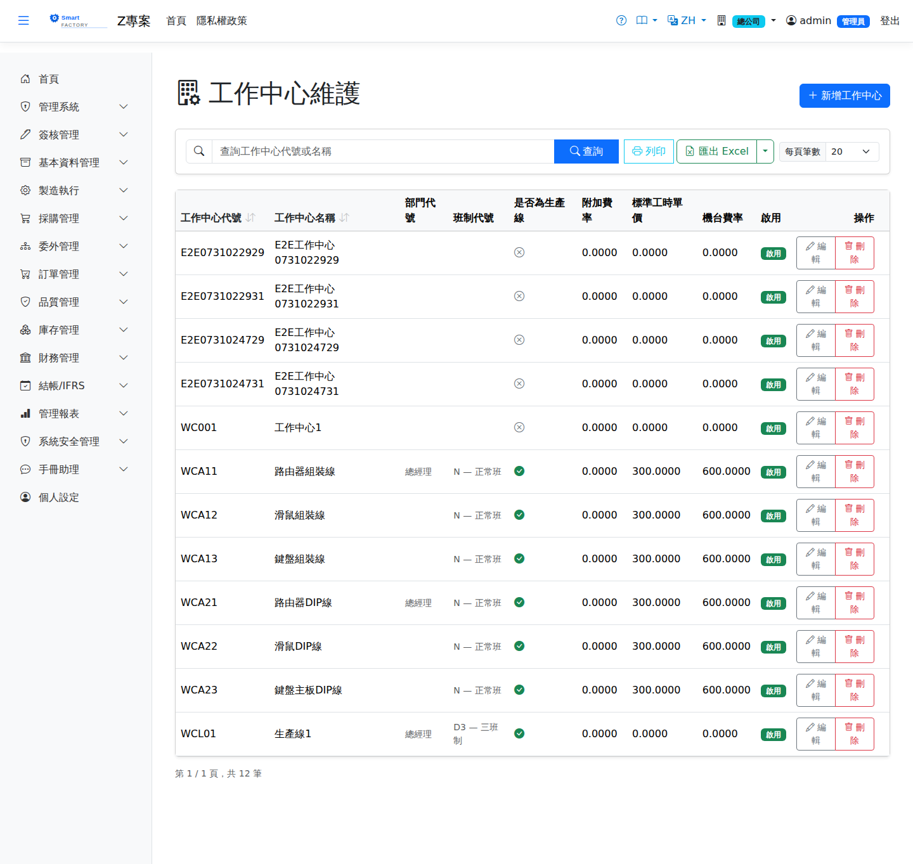

工作中心Work Center
工作中心（Work Center）是製造執行的基本生產資源單位，包含作業人員、機台或生產線。途程工序指定工作中心，排程引擎依此分配機台產能。A work center is the basic production resource of manufacturing execution — operators, machines or a production line. Routing operations point to a work center, and the scheduling engine allocates machine capacity accordingly.

欄位說明Field reference
工作中心基本資料Work center basics
| 欄位名稱Field | 必填Required | 說明Guide |
|---|---|---|
| 工作中心代碼Work Center Code | 必填Required | 唯一識別碼（例：WC01-焊接站）Unique code (e.g. WC01 — Welding Station) |
| 工作中心名稱Work Center Name | 必填Required | 工站完整名稱Full work center name |
| 部門Department | 所屬部門，供成本歸集用Department the work center belongs to, used for cost collection | |
| 班別群組Shift Group | 指定此工站使用的班別群組（影響排程可用工時）Shift group used by this work center (drives the hours available for scheduling) | |
| 是否生產線Is Production Line | 勾選後代表流水線作業，排程處理方式不同Marks the work center as a production line; scheduling handles it differently | |
| 預設備料倉Default Staging Warehouse | 本工站開立Issued by this work center 備料單Material Staging時預設的移入倉（下拉中備料倉類型會排在最前並標 ★）。未設定時改取系統參數 the default destination warehouse (staging-type warehouses are listed first and marked ★). Falls back to the system parameter when unset mfg_default_staging_wh | |
| 預設備料儲位Default Staging Location | 搭配上一欄的儲位，選擇倉庫後自動過濾。未設定時改取系統參數Works together with the location field above; options are filtered once a warehouse is chosen. Falls back to the system parameter when unset mfg_default_staging_location | |
| 是否啟用Active | 停用後不可被途程工序或排程選用Once inactive, cannot be used by routing operations or scheduling | |
| 備註Notes | 工站補充說明Work center notes |
成本費率Cost rates
| 欄位名稱Field | 必填Required | 說明Guide |
|---|---|---|
| 標準人工成本Std Labor | 每小時人工費率（元/小時），用於工單成本計算Labor rate per hour, used in work order costing | |
| 機台小時費率Machine Hourly Rate | 每小時機台折舊/電費等費率（元/小時）Machine depreciation, power and similar cost per hour | |
| 附加費率Additional Rate | 其他間接費用費率（%），以人工成本為基礎計算Other indirect overhead rate (%), calculated on labor cost |
機台清單Machines
每個工作中心可包含多台機台。排程引擎依機台個別分配派工時段。A work center can contain several machines. The scheduling engine allocates dispatch slots per machine.
| 欄位名稱Field | 必填Required | 說明Guide |
|---|---|---|
| 機台代碼Machine | 必填Required | 工站內唯一機台識別碼（例：M001）Machine code, unique within the work center (e.g. M001) |
| 機台名稱Machine Name | 必填Required | 機台完整名稱Full machine name |
| 機台狀態Machine Status | 可用（Available）/ 待機（Standby）/ 故障（BreakDown）/ 保養（Maintenance）等。只有新增機台時可在這裡設定初始狀態；既有機台的狀態為唯讀，要到「機台狀態異動」變更Available / Standby / BreakDown / Maintenance, and so on. You can set the initial status here only when adding a machine; for an existing machine the status is read-only and is changed under Machine Status Events |
操作步驟Steps
新增工作中心Add Work Center
更新機台狀態Updating machine status
機台發生故障或進行保養時，一律到When a machine breaks down or goes into maintenance, always record the change under 機台狀態異動Machine Status Events（或手機「機台狀態」）登記。那裡會一併處理機台上的派工（已排退回待排、已開始的暫停、恢復時自動恢復）並留下異動紀錄。本畫面的既有機台狀態為唯讀，代號也不能修改。 (or "Machine Status" on mobile). That screen also deals with the dispatches on the machine (scheduled ones go back to pending, started ones go on hold and resume automatically when the machine is back) and keeps a record of the change. On this screen, the status and code of an existing machine are read-only.
刪除機台Removing a machine
在機台清單刪除一列後儲存即移除該機台。機台上還有未結束的派工（含待排、已排、暫停）時無法刪除，系統會列出是哪幾台；請先完成、換機或結案這些派工。Delete a row from the machine list and save to remove the machine. A machine that still has unfinished dispatches (including pending, scheduled and on hold) cannot be removed, and the system lists which machines they are; complete, switch or close those dispatches first.